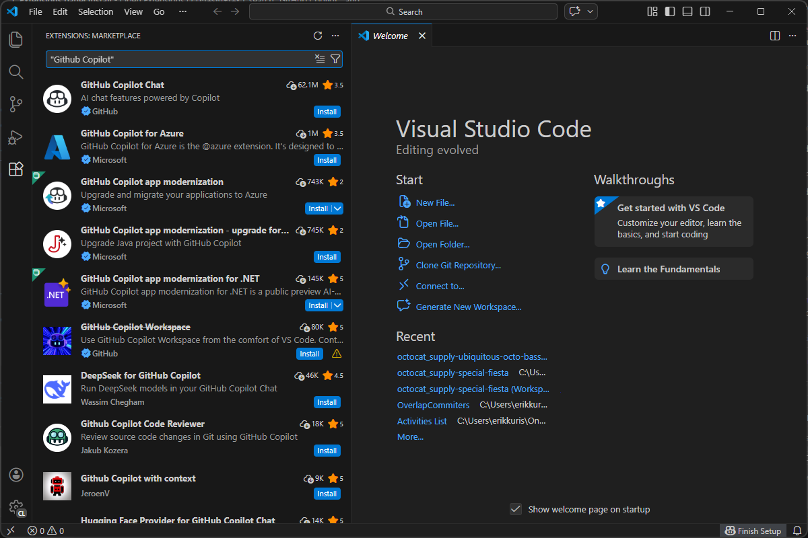
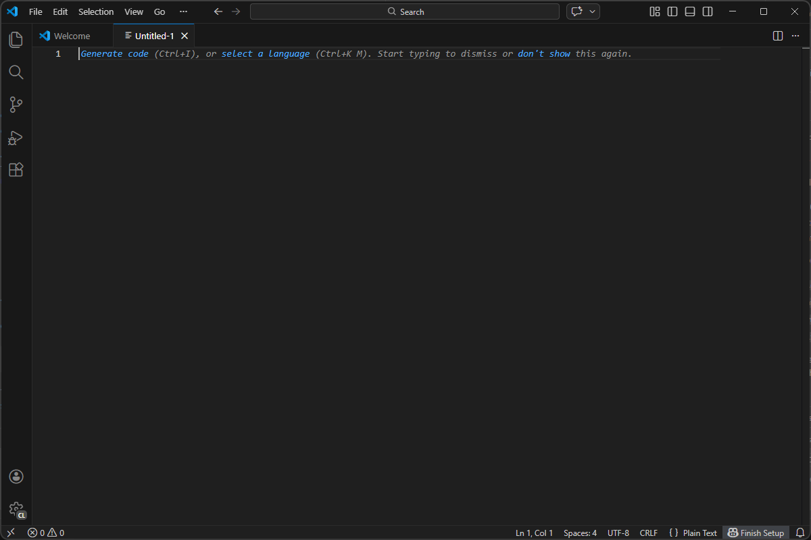
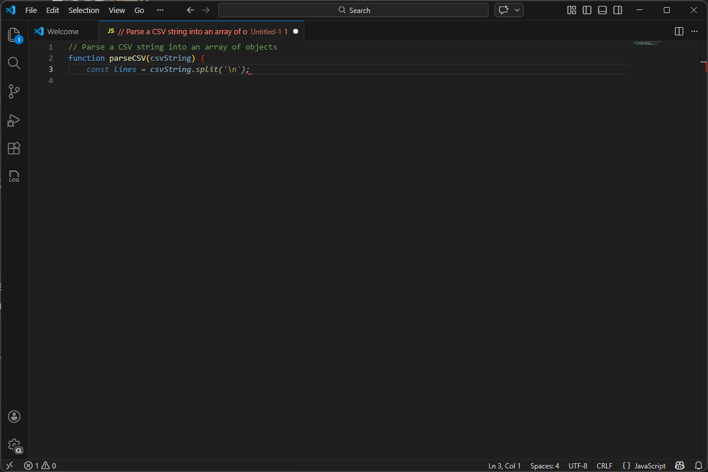
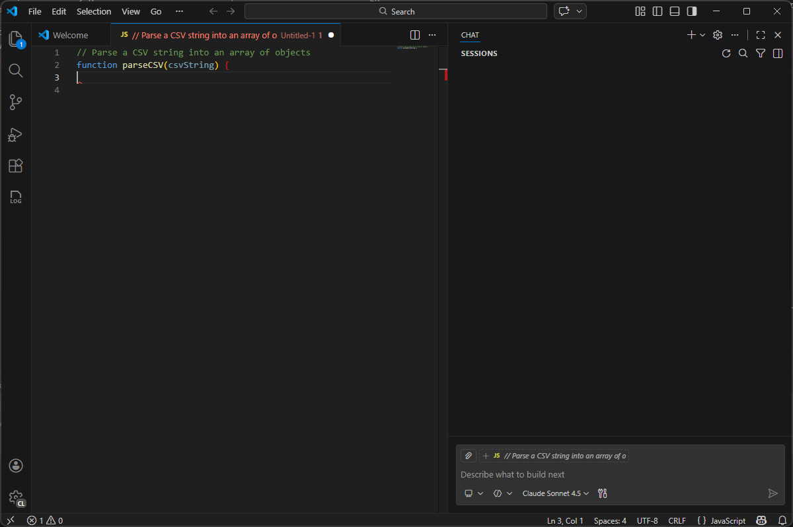

AI Pair Programming - The Copilot Awakens
Get hands-on with GitHub Copilot in VS Code - from first activation to configuring your workspace and letting AI accelerate every keystroke
What We'll Cover
Today's Journey
- What is GitHub Copilot? - AI pair programming at a glance
- Getting Started - Installing, signing in, and verifying your license
- Inline Completions - Ghost text, Tab to accept, and multi-line suggestions
- Copilot Chat - Ask questions, get explanations, generate code
- Workspace Configuration - Settings, per-language controls, and team consistency
- Live Demo - Build a real function end-to-end with Copilot
What Is GitHub Copilot?
Your AI Pair Programmer
- GitHub Copilot is an AI-powered code assistant that lives inside your editor
- Trained on billions of lines of public code - understands patterns, APIs, and idioms across dozens of languages
- Suggests whole lines, entire functions, tests, documentation, and even terminal commands
- Works in VS Code, JetBrains IDEs, Neovim, Visual Studio, and github.com
How Copilot Works
- Context gathering - Copilot reads your open file, neighboring tabs, comments, and function signatures
- Model inference - Sends context to a large language model (LLM) hosted by GitHub
- Suggestion delivery - Returns completions as grey "ghost text" in your editor, or full answers in chat
- Your code stays yours - Copilot Business and Enterprise do not retain prompts or suggestions for model training
Copilot Plans
Free
50 premium requests/mo • 2,000 completions/mo
Inline completions, chat, CLI. Great for trying Copilot at zero cost.
$0 USD
Pro
300 premium requests/mo • Unlimited completions
Coding agent, code review, premium model access. Free for students and OSS maintainers.
$10 USD/user/mo
Business
300 premium requests/user/mo • Unlimited completions
Organization management, policy controls, audit logs, IP indemnity. No code retention.
$19 USD/seat/mo
Enterprise
1,000 premium requests/user/mo • Unlimited completions
Everything in Business plus knowledge bases, content exclusion, and organization custom instructions.
$39 USD/seat/mo
Premium requests are consumed by chat messages multiplied by the model multiplier. Additional requests available at $0.04/request.
Getting Started
Installing & Activating Copilot
- Open VS Code and go to Extensions (
Ctrl+Shift+X) - Search for "GitHub Copilot Chat" and click Install
- The inline completions engine is built into the Chat extension - one install covers everything
- Sign in with your GitHub account when prompted
- Verify activation: look for the Copilot icon in the status bar (bottom right)

Signing In & Verifying Your License
- Click the Copilot status bar icon → "Sign in to GitHub"
- Authorize the VS Code GitHub extension in your browser
- If your org uses Copilot Business/Enterprise, ensure your admin has granted you a seat
- Run
GitHub Copilot: Check Statusfrom the Command Palette to confirm you're active - Troubleshooting: check firewall rules, proxy settings, or SSO requirements
Inline Completions
Ghost Text - Your New Superpower
- As you type, Copilot shows grey "ghost text" - predicted completions inline
- Press Tab to accept the full suggestion
- Press Ctrl+→ to accept word-by-word
- Press Esc or keep typing to dismiss and get a new suggestion
- Use Alt+] / Alt+[ to cycle through alternative suggestions

Getting Better Suggestions
- Write a comment first - describe the function in plain English, then let Copilot generate it
- Meaningful names -
calculateShippingCostgives better results thandoStuff - Open related files - Copilot uses neighboring tabs as context
- Type signatures and JSDoc - the more structure you give, the better the completions

Copilot Chat
Conversational AI in Your Editor
- Open Copilot Chat with Ctrl+Shift+I (or click the chat icon in the sidebar)
- Ask questions in natural language - "How do I read a file in Node?"
- Copilot responds with explanations, code snippets, and follow-up suggestions
- Conversations are context-aware - Copilot sees your open file and selection
- Use inline chat (
Ctrl+I) for quick edits right in the editor
Useful Chat Commands
/explain- Explain selected code in plain language/fix- Suggest a fix for problems in the selection or file/tests- Generate unit tests for the selected code/doc- Generate documentation comments@workspace- Ask questions about your entire project, not just the active file

Configuring Your Workspace
Key Copilot Settings
github.copilot.enable- Toggle Copilot on/off per language:{"python": true, "markdown": false}editor.inlineSuggest.enabled- Master switch for inline ghost textgithub.copilot.chat.localeOverride- Force chat responses in a specific language- Use Workspace Settings (
.vscode/settings.json) to enforce team-wide defaults
// .vscode/settings.json
{
"github.copilot.enable": {
"*": true,
"plaintext": false,
"markdown": false
}
}Custom Instructions
- Create a
.github/copilot-instructions.mdfile in your repo - Copilot reads these instructions and applies them to every interaction
- Great for enforcing coding standards: "Always use TypeScript strict mode", "Prefer async/await over callbacks"
- Team consistency - every developer gets the same AI guidance from day one
Copilot in Action
Demo: Writing a Function with Copilot
- Create a new file
utils.js - Write a comment:
// Parse a CSV string into an array of objects - Watch Copilot generate the full function
- Accept with Tab, then ask Chat to add error handling
// Parse a CSV string into an array of objects
// using the first row as headers
function parseCSV(csvString) {
const lines = csvString.trim().split('\n');
const headers = lines[0].split(',').map(h => h.trim());
return lines.slice(1).map(line => {
const values = line.split(',').map(v => v.trim());
return headers.reduce((obj, header, i) => {
obj[header] = values[i];
return obj;
}, {});
});
}Demo: Using Chat to Refactor
- Select the function → open inline chat (
Ctrl+I) - Type: "Add error handling for malformed CSV input"
- Review the diff - Copilot shows additions in green, removals in red
- Click Accept or Discard
- Then ask: "Generate unit tests for this function"
Tips for Getting the Most from Copilot
- Be specific - "Write a Python function that validates an email address using regex" beats "write code"
- Iterate - Accept a suggestion, then refine it with follow-up prompts
- Review everything - AI suggestions are starting points, not final answers
- Use context - Open related files, add comments, use meaningful names
- Learn the shortcuts - Tab, Ctrl+→, Alt+], Ctrl+I, Ctrl+Shift+I
Wrap-Up & Next Steps
Key Takeaways
- GitHub Copilot is your AI pair programmer - inline completions + chat + CLI
- Ghost text gives you real-time suggestions as you type - Tab to accept
- Copilot Chat lets you ask questions, get explanations, and generate code conversationally
- Workspace settings and custom instructions keep your team aligned
- Always review AI suggestions - you're the pilot, Copilot is your co-pilot
Where to Go Next
- MCP for You and Me - Plug in the Model Context Protocol and work issues without leaving VS Code
- Prompts, Instructions, Skills, and Agents - Master the building blocks of Copilot customization
- Copilot Docs -
docs.github.com/copilot - VS Code Copilot Tips -
code.visualstudio.com/docs/copilot
Thank You
Questions? Reach out on Teams or open an issue.